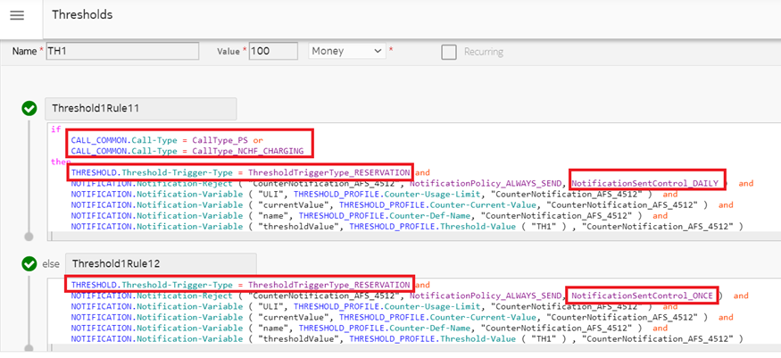

Notification can be sent to a subscriber when the call cannot be
established due to the entityCounter usage limit value with Reject action. Following are
the possible scenarios:
- New call cannot be established
- Ongoing call cannot reserve new quota
Such notifications can be sent based on the configurations made, such as:
- Configured times per period (configured once, times, or always per
period) for each entityCounter: This can be applicable for all call
types such as IMS/SMS/MMS/PS.
- Configured daily for each entityCounter: This can be applicable for one
notification per day for PS call.
- Existing NCC behavior.
Following is the rule example:
